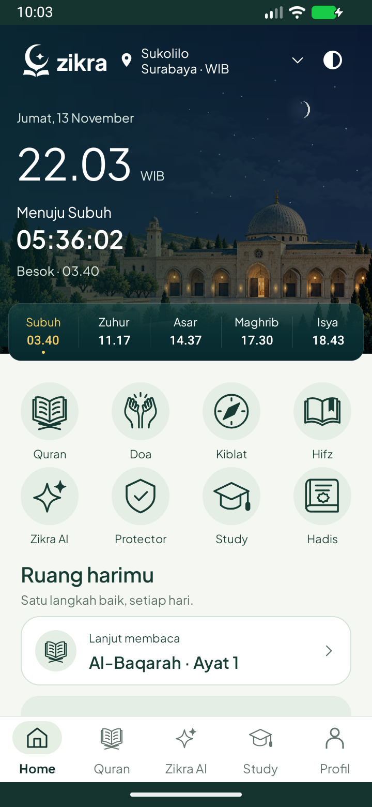

Bingung? Mulai
dari satu pertanyaan.
Diskusikan materi bersama Zikra AI. Ketik pertanyaan atau pilih foto dan dokumen. AI online memerlukan internet dan memiliki kuota; panduan offline lebih terbatas.
BELAJAR · IBADAH · KESEHARIAN
Ruang kecil untuk memahami pelajaran, menjaga bacaan, dan menyusun harimu. Satu langkah baik, setiap hari.
Kenali versi betaAndroid · Pratinjau beta · Belum tersedia untuk unduhan publik

ADA UNTUK HARI-HARIMU
Diskusikan materi bersama Zikra AI. Ketik pertanyaan atau pilih foto dan dokumen. AI online memerlukan internet dan memiliki kuota; panduan offline lebih terbatas.
Catat tugas di Study, tentukan tenggat, lalu luangkan waktu dengan sesi fokus.
Al-Quran dengan terjemahan dan audio, target hafalan, arah Kiblat, serta pilihan pengingat salat.
Lihat prakiraan cuaca dan laporan gempa. Informasi mengikuti lokasi, sumber, dan waktu pembaruan; bukan sistem peringatan dini atau pengganti arahan petugas.
LANGKAH BERIKUTNYA
Kami sedang menyelesaikan pemeriksaan paket dan pengalaman penggunaan sebelum membuka unduhan.
Tidak perlu menghapus Zikra yang sudah terpasang.
SEBELUM MENCOBA
AI online, pembaruan cuaca, laporan gempa dan pencarian masjid memerlukan jaringan. Sebagian bacaan dan data lokal dapat dipakai offline setelah tersedia di perangkat. Cakupan unduhan berbeda untuk teks, font dan audio.
Riwayat dan aktivitas disimpan di perangkat. Pesan dan lampiran yang kamu kirim dalam mode AI online diproses backend dan penyedia AI. Layanan lokasi dan konten memiliki pemrosesan tersendiri. Baca ringkasan privasi sebelum menggunakan layanan online.
Adzan mengikuti lokasi, metode jadwal, izin alarm dan pengaturan Android. Pengingat lain bersifat best-effort; perangkat, jaringan dan pembatasan baterai dapat menunda pengiriman.
Gunakan kanal resmi dan paket bertanda tangan yang sesuai. Jangan uninstall atau hapus data untuk mencoba pembaruan. Jika pemasangan ditolak karena tanda tangan berbeda, hentikan dan hubungi dukungan.
Kirim versi aplikasi dan langkah terjadinya masalah. Jangan kirim password, token, atau dokumen pribadi.